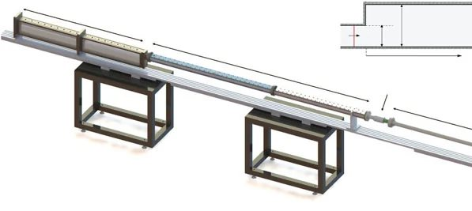
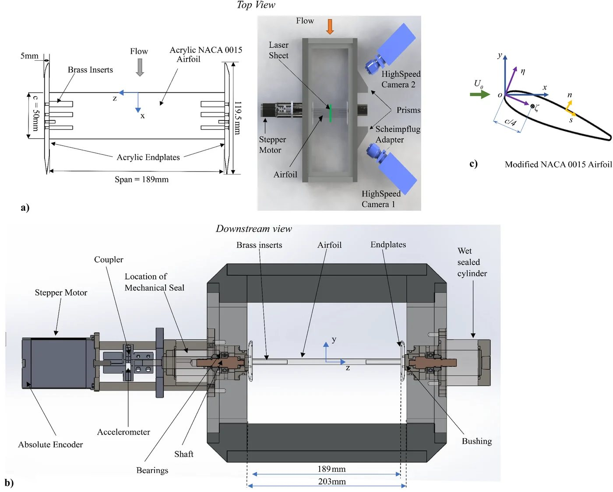

The measurement techniques I use and the facilities I have designed, built or established. Most of my research depends on infrastructure I helped create.
Measurement techniques
Flow diagnostics
Tomographic PIV and PTV
Stereo and time-resolved PIV
Refractive-index matching
Schlieren imaging
Laser-sheet interface scanning
Single-camera 3D PIV
Analysis
Boundary-aware reconstruction (LE-DM)
Pressure and loads from PIV
Coherent structures and FTLE
Turbulence statistics (uPrime)
Instrumentation
Facility design and build
Multi-instrument synchronization
LabVIEW and Arduino control
Motorized traverses
Facilities I built
Technion · co-established with Asst. Prof. Omri Ram
Transient Fluid Mechanics Laboratory
Developed the laboratory from a temporary space into a fully equipped research facility with capabilities for advanced flow measurements, multiphase experiments and shock-driven flows.

Layout of the shock tube. From Gichon, Jose et al., J. Fluid Mech. (2024).
Technion · designed, built and automated
Shock tube
A 7 m shock tube, including the electronics, sensor integration, multi-instrument synchronization, motorized traversal and LabVIEW/Arduino control. Its control system remains the core of the facility, which now runs with new test sections.
Tomographic PTV setup around the octagonal tank. From Jose, Ben-Harosh and Ram, Int. J. Multiphase Flow (2026).
Technion · established
Refractive-index-matched tomographic PTV
Time-resolved, four-camera tomographic particle tracking with refractive-index matching, for freely moving and optically hidden bodies. It is the measurement platform behind LE-DM.
PET-PIV camera (C0) integrated with the four tomographic cameras (C1–C4). From Xiao, Jose et al., arXiv (2026).
Technion · built
Tomographic and PSF-engineered imaging
A five-camera system combining tomographic and PSF-engineered imaging, used to validate a single-camera 3D PIV method based on wavefront shaping and deep learning.
Contributed to the design of single- and multi-bubble boiling facilities. Currently involved in confined-cell experiments on boiling and bubble-driven convection, using digital holography to track bubble growth and evolution.

Pitching-airfoil test section and stereo PIV arrangement in the tunnel. From Jose, Lu, Agarwal and Katz, AIAA J. (2026).
Johns Hopkins University · designed and built
Refractive-index-matched water tunnel
A large refractive-index-matched recirculating water tunnel using more than 2,000 L of sodium iodide solution, including the mixing plant, storage, pressure and vacuum control, an inline cyclone bubble separator and hydraulic calibration.